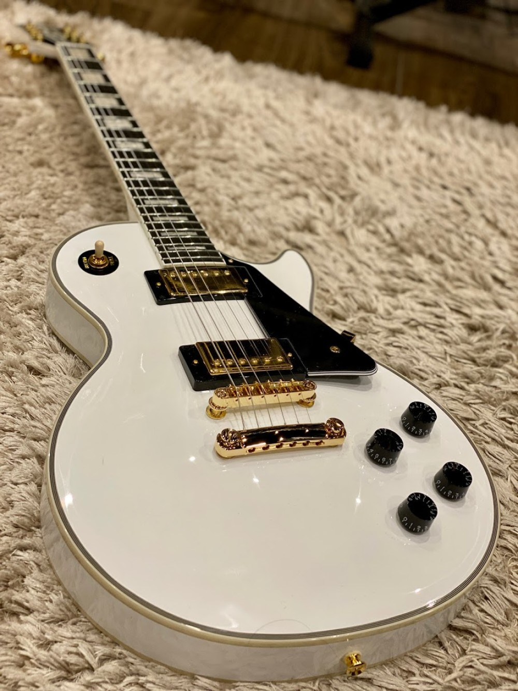

Epiphone Les Paul Custom – это электрогитара, которая никогда не нуждалась в особом представлении. Если на инструменте Gibson или Epiphone написано слово Custom, то будьте уверены, это 100% лучшая модель из всех, которые вы можете найти. Это не только самое качественное дерево и лучшая электроника, это еще и уникальный, узнаваемый дизайн корпуса и головы грифа. Custom – это синоним закрытого общества, созданного для тех, кто хочет иметь Инструмент с большой буквы – живой, вдохновляющий, со своим характером и богатой историей.

Лучше Джимми Хендрикса: научись играть на гитаре с нуля всего за 2 часа! Проверенная методика...